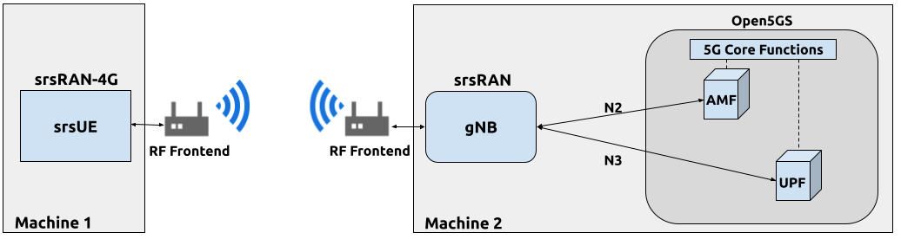
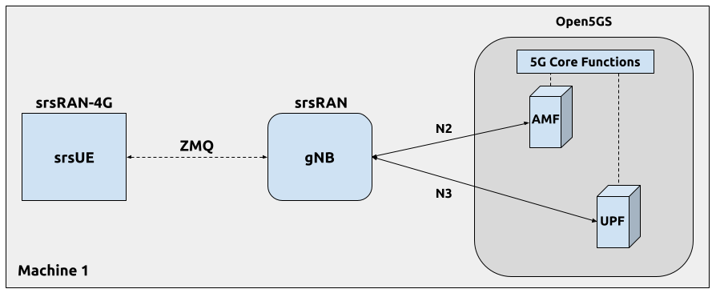
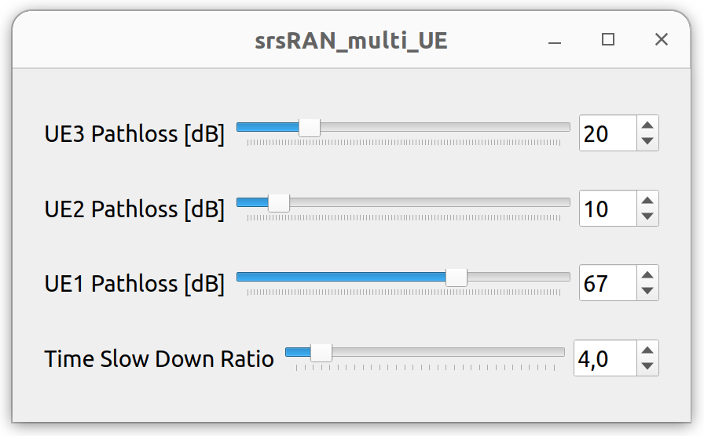

srsRAN gNB 与 srsUE
警告
srsUE 中的 5G 扩展不再处于积极开发中，尽管它确实收到了小型维护更新。参见 这里 了解更多详情。 srsUE 旨在用于 用于概念验证和初始测试，使用户无需昂贵的硬件即可测试 srsRAN Project。它不适用于需要部署就绪解决方案的场景。
概述
srsRAN Project 是 5G CU/DU 解决方案，不包括 UE 应用程序。然而， srsRAN 4G 确实包括可用于测试的原型 5G UE (srsUE)。 本应用说明展示了如何使用 srsUE、srsRAN Project gNodeB 和 Open5GS 5G 核心网络创建端到端完全开源 5G 网络。
此处显示了各种用例，包括无线和基于 ZeroMQ 的设置以及多 UE 仿真。
硬件和软件概述
本应用笔记使用以下硬件和软件：
装有 Ubuntu 22.04.1 LTS 的电脑
srsRAN 4G (23.11或之后)
两台 Ettus Research USRP B210 （通过 USB3 连接）
理想情况下，USRP 将连接到 10 MHz 外部参考时钟或 GPSDO，但这不是严格要求。我们推荐 利奥·博德纳尔 GPSDO.
srsRAN 4G
如果您尚未这样做，请安装最新版本的 srsRAN 4G 及其所有依赖项。这在 安装指南.
请查看我们的srsRAN 4G ZeroMQ 应用说明 有关安装 ZMQ 并将其与 srsRAN 4G 一起使用的信息。
局限性
当前 srsUE 实现在 5G SA 模式下运行时存在一些功能限制。主要功能限制如下：
子载波间隔 (SCS) 限制为 15 kHz，这意味着只能使用 FDD 频段。
限制为 5、10、15 或 20 MHz 带宽 (BW)
不支持切换
Open5GS
在本示例中，我们使用 Open5GS 作为 5G 内核。
Open5GS 是 5G 核心和 EPC 的 C 语言开源实现。以下链接将为您提供 包含下载和设置 Open5GS 所需的信息，以便可以与 srsRAN 一起使用：
出于本应用说明的目的，我们将使用 srsRAN Project 中提供的 Docker 化 Open5GS 版本，网址为 srsgnb/docker.
零MQ
有关安装 ZMQ 和正确构建 srsRAN Project 的指南，请参阅 这里.
无线设置
下图展示了设置架构：

配置
您可以在以下位置找到此示例的配置文件 配置 srsRAN Project 源文件的文件夹。你也可以找到它 这里:
您可以在此处下载 srsUE 配置：
建议您使用这些文件以避免手动更改配置时出现错误。此处未包含的任何配置文件都不需要修改默认设置。 以下各节概述了所做修改的详细信息。
gNB
需要对 gNB 配置文件进行以下更改。
gNB必须连接到5G核心网络中的AMF，因此我们需要提供两个IP地址：
铜_cp:
AMF:
地址: 10.53.1.2 # AMF 的地址或主机名。检查 Open5GS 配置 -> amf -> ngap -> addr
港口: 38412
绑定地址: 10.53.1.1 # gNB 为来自 AMF 的流量绑定的本地 IP。
支持的跟踪区域:
- 塔克: 7
plmn_列表:
- 普鲁姆: "00101"
tai_slice_support_list:
- 海温: 1
不活动计时器: 7200 # 设置UE/PDU Session/DRB不活动定时器为7200秒。支持：[1 - 7200]。
接下来，我们要配置RF前端设备：
俄罗斯特别提款权:
设备驱动程序: 超高清 # RF 驱动程序名称。
设备参数: 类型=B200 # 可以选择将参数传递给选定的 RF 驱动程序。
时钟: 外部的 # 使用 USRP B210 的外部参考时钟。
斯拉特: 23.04 # RF 采样率可能需要根据所选带宽进行调整。
发送增益: 75 # RF 的发射增益可能需要根据给定情况进行调整。
接收增益: 75 # RF 的接收增益可能需要根据给定情况进行调整。
最后，我们配置5G单元参数：
单元格配置:
dl_arfcn: 368500 # 下行载波的ARFCN（中心频率）。
乐队: 3 # NR 频段。
信道带宽MHz: 20 # 带宽（MHz）。 PRB 的数量将自动导出。
通用_scs: 15 # 用于数据的子载波间隔（以 kHz 为单位）。
普鲁姆: "00101" # gNB 广播的 PLMN。
塔克: 7 # 追踪区号（需要匹配核心配置）。
物理专用信道:
常见的:
ss0_索引: 0 # 设置搜索空间零索引以匹配 srsUE 功能
coreset0_index: 12 # 设置搜索 CORESET 零索引以匹配 srsUE 功能
专注的:
ss2_类型: 常见的 # 搜索空间类型，必须设置为common
dci_format_0_1_and_1_1: 假的 # 设置正确的 DCI 格式（后备）
普拉赫:
普拉赫配置索引: 1 # 设置 PRACH 配置以匹配 srsUE 的期望
srsUE
需要对 UE 配置文件进行以下更改，以使其能够以 SA 模式连接到 gNB。
首先，需要更改以下参数 [射频] 选项，以便 B210 得到最佳配置：
[射频]
频率偏移 = 0
发送增益 = 50
接收增益 = 40
斯拉特 = 23.04e6
nof_天线 = 1
设备名称 = 超高清
设备参数 = 时钟=外部的 # 使用 USRP B210 的外部参考时钟。
time_adv_nsamples = 300
需要进行下一组更改 [大鼠.eutra] 选项。 LTE 载波已禁用，以强制 UE 使用 5G NR 载波：
[老鼠.尤特拉]
dl_earfcn = 2850
nof_运营商 = 0
然后， [大鼠.nr] 5G SA 模式操作需要配置选项：
[老鼠.号]
乐队 = 3
nof_运营商 = 1
最大nof_prb = 106
nof_prb = 106
的 最大nof_prb 和 nof_prb 必须根据下表调整参数以适应所使用的带宽：
体重 |
PRB |
|---|---|
5 |
25 |
10 |
52 |
15 |
79 |
20 |
106 |
最后，设置release和ue_category：
[RRC]
释放 = 15
ue_类别 = 4
请注意，使用以下（默认）USIM 凭证：
[乌西姆]
模式 = 软的
算法 = 里程
OPC = 63BFA50EE6523365FF14C1F45F88737D
k = 00112233445566778899aabbccddeeff
伊姆西 = 001010123456780
串号 = 353490069873319
通过以下配置启用 APN：
[纳斯]
接入点 = 萨普恩
apn_协议 = ipv4
运行网络
运行网络时应使用以下顺序：
5GC
gNB
UE
Open5GS核心
srsRAN Project 提供 Open5GS 的 docker 化版本。是一种方便快捷的核心网启动方式。您可以按如下方式运行它：
光盘 ./srsRAN_Project/docker
docker compose up --build 5gc
请注意，我们已经配置了 Open5GS 以便与 srsRAN Project 正确运行。此外，UE 数据库中填充了我们的 srsUE 使用的凭据。
gNB
我们直接从构建文件夹运行 gNB，即 ./srsRAN_Project/build/apps/gnb/，（配置文件也位于此处）使用以下命令：
须藤 ./国民银行 -c ./国民银行.yaml
控制台输出应类似于：
--== srsRAN gNB (提交 374200迪伊) ==--
正在连接 到 AMF 上 10.53.1.2:38412
[信息] [超高清] 操作系统; GNU C++ 版本 9.2.1 20200304; Boost_107100; 超高清_3.15.0.0-2构建5
[信息] [记录] 快速路径 记录 残疾人 在 运行时.
制作 USRP 对象 与 参数 '类型=b200'
[信息] [B200] 检测到 设备: B210
[信息] [B200] 运营 结束 USB 3.
[信息] [B200] 初始化 编解码器 控制...
[信息] [B200] 初始化 收音机 控制...
[信息] [B200] 表演 注册 环回 测试...
[信息] [B200] 注册 环回 测试 通过了
[信息] [B200] 表演 注册 环回 测试...
[信息] [B200] 注册 环回 测试 通过了
[信息] [B200] 设置 大师 时钟 率 选择 到 “自动”.
[信息] [B200] 询问 为了 时钟 率 16.000000 兆赫兹...
[信息] [B200] 其实 得到了 时钟 率 16.000000 兆赫兹.
[信息] [多USRP] 设置 大师 时钟 率 选择 到 “手册”.
[信息] [B200] 询问 为了 时钟 率 23.040000 兆赫兹...
[信息] [B200] 其实 得到了 时钟 率 23.040000 兆赫兹.
细胞 PCI=1, 体重=20 兆赫兹, dl_arfcn=368500 (n3), dl_频率=1842.5 兆赫兹, dl_ssb_arfcn=368410, ul_频率=1747.5 兆赫兹
的 正在连接 到 AMF 上 10.53.1.2:38412 消息表明 gNB 发起了与核心的连接。
如果连接尝试成功，Open5GS 控制台上将显示以下（或类似内容）：
Open5GS | 04/17 10:00:43.567: [AMF] 信息: gNB-氮气 已接受[10.53.1.1]:41578 在 吴-路径 模块 (../源代码/AMF/恩加普-sctp.c:113)
Open5GS | 04/17 10:00:43.567: [AMF] 信息: gNB-氮气 已接受[10.53.1.1] 在 主控_sm 模块 (../源代码/AMF/AMF-SM.c:706)
Open5GS | 04/17 10:00:43.567: [AMF] 信息: [已添加] 数量 的 纳米粒子 是 现在 1 (../源代码/AMF/上下文.c:1034)
Open5GS | 04/17 10:00:43.567: [AMF] 信息: gNB-氮气[10.53.1.1] 最大流数 : 30 (../源代码/AMF/AMF-SM.c:745)
srsUE
最后，我们启动srsUE。这也可以直接从构建文件夹中完成（即 /srsRAN_4G/构建/srsue/），配置文件位于同一位置：
须藤 ./斯苏埃 ue_rf.会议
如果 srsUE 成功连接到网络，控制台上应显示以下（或类似内容）：
Reading configuration file ./ue_rf.conf...
Built in Release mode using commit eea87b1d8 on branch master.
Opening 1 channels in RF device=default with args=clock=external
Supported RF device list: UHD zmq file
Trying to open RF device 'UHD'
[INFO] [UHD] linux; GNU C++ version 9.2.1 20200304; Boost_107100; UHD_3.15.0.0-2build5
[INFO] [LOGGING] Fastpath logging disabled at runtime.
[INFO] [MPMD FIND] Found MPM devices, but none are reachable for a UHD session. Specify find_all to find all devices.
Opening USRP channels=1, args: type=b200,master_clock_rate=23.04e6
[INFO] [UHD RF] RF UHD Generic instance constructed
[INFO] [B200] Detected Device: B210
[INFO] [B200] Operating over USB 3.
[INFO] [B200] Initialize CODEC control...
[INFO] [B200] Initialize Radio control...
[INFO] [B200] Performing register loopback test...
[INFO] [B200] Register loopback test passed
[INFO] [B200] Performing register loopback test...
[INFO] [B200] Register loopback test passed
[INFO] [B200] Asking for clock rate 23.040000 MHz...
[INFO] [B200] Actually got clock rate 23.040000 MHz.
RF device 'UHD' successfully opened
Setting manual TX/RX offset to 300 samples
Waiting PHY to initialize ... done!
Attaching UE...
Random Access Transmission: prach_occasion=0, preamble_index=0, ra-rnti=0x39, tti=2094
Random Access Complete. c-rnti=0x4602, ta=0
RRC Connected
PDU Session Establishment successful. IP: 10.45.1.2
RRC NR reconfiguration successful.
很明显，一旦为 UE 分配了 IP，连接就已成功，这可以在 配电单元 会议 设立 成功了。 IP: 10.45.1.2。
然后用以下命令确认 NR 连接RRC NR 重新配置 成功了。 消息。
测试网络
在这里，我们演示如何使用 ping 和 iPerf3 工具来测试网络的连接性和吞吐量。
路由配置
在能够 ping UE 之前，您需要在主机上添加到 UE 的路由 主机 （即运行 Open5GS docker 容器的容器）：
sudo ip ro add 10.45.0.0/16 via 10.53.1.2
检查主机路由表：
route -n
它应包含以下条目（请注意，Iface 名称可能不同）：
Kernel IP routing table
Destination Gateway Genmask Flags Metric Ref Use Iface
0.0.0.0 192.168.0.1 0.0.0.0 UG 100 0 0 eno1
10.45.0.0 10.53.1.2 255.255.0.0 UG 0 0 0 br-dfa5521eb807
10.53.1.0 0.0.0.0 255.255.255.0 U 0 0 0 br-dfa5521eb807
...
接下来，为UE添加默认路由，如下所示：
sudo ip route add default via 10.45.1.1 dev tun_srsue
平
Ping是测试网络端到端连通性最简单的工具，即测试UE和核心是否可以通信。
上行链路
要测试上行方向的连接，请从 UE 机器运行以下命令：
平 10.45.1.1
下行
要测试下行方向的连接，请在运行核心网络的机器（即 Open5GS docker 容器）上运行以下命令：
平 10.45.1.2
UE 的 IP 可以从 UE 控制台输出中获取。每次 UE 重新连接到网络时，这可能会发生变化，因此最佳实践是始终通过读取来仔细检查分配的最新 IP 在运行下行链路流量之前从控制台。
Ping 输出
示例 平 输出：
# ping 10.45.1.1 -c 4
平 10.45.1.1 (10.45.1.1) 56(84) 字节 的 数据.
64 字节 来自 10.45.1.1: icmp_seq=1 TTL=64 时间=39.9 女士
64 字节 来自 10.45.1.1: icmp_seq=2 TTL=64 时间=38.9 女士
64 字节 来自 10.45.1.1: icmp_seq=3 TTL=64 时间=37.0 女士
64 字节 来自 10.45.1.1: icmp_seq=4 TTL=64 时间=36.1 女士
--- 10.45.1.1 平 统计 ---
4 数据包 传送的, 4 收到, 0% 数据包 损失, 时间 3004女士
实时时间 分钟/平均/最大/米德夫 = 36.085/37.952/39.859/1.493 女士
性能3
iPerf3 是一种生成（TCP 和 UDP）流量并测量流量参数（例如吞吐量和数据包丢失）的工具。
在此示例中，我们在上行链路方向生成流量。为此，我们在UE端运行一个iPerf3客户端，在网络端运行一个服务器。 UDP 流量将以 10Mbps 的速度生成，持续 60 秒。首先启动服务器，然后启动客户端，这一点很重要。
网络侧
启动运行核心网络的机器（即 Open5GS docker 容器）的 iPerf3 服务器：
iperf3 -s -我 1
服务器侦听来自 UE 的流量。客户端连接后，服务器每秒打印流量测量结果。
UE-侧
网络和 iPerf3 服务器启动并运行后，可以使用以下命令从 UE 的计算机运行客户端：
# TCP
iperf3 -c 10.53.1.1 -我 1 -t 60
# 或UDP
iperf3 -c 10.53.1.1 -我 1 -t 60 -你 -乙 10中号
现在流量将从 UE 发送到网络。这将显示在服务器和客户端控制台中。此外，我们还将观察 UE 和 gNB 的控制台痕迹。
注意： 所有路由都必须按照中所示进行配置 基于 USRP 的设置的路由配置 部分。
iPerf3 输出
示例 服务器 iPerf3 输出：
# iperf3 -s -i 1
-----------------------------------------------------------
服务器 倾听 上 5201
-----------------------------------------------------------
已接受 连接 来自 10.45.1.2, 港口 40544
[ 5] 本地的 10.45.1.1 港口 5201 已连接 到 10.45.1.2 港口 40546
[ 身份证号] 间隔 转乘 比特率
[ 5] 0.00-1.00 秒 1.20 兆字节 10.1 兆比特/秒
[ 5] 1.00-2.00 秒 1.22 兆字节 10.2 兆比特/秒
[ 5] 2.00-3.00 秒 1.16 兆字节 9.71 兆比特/秒
[ 5] 3.00-4.00 秒 1.12 兆字节 9.44 兆比特/秒
[ 5] 4.00-5.00 秒 1.25 兆字节 10.5 兆比特/秒
[ 5] 5.00-6.00 秒 1.25 兆字节 10.5 兆比特/秒
示例 客户 iPerf3 输出：
# iperf3 -c 10.53.1.1 -i 1 -t 60 -u -b 10M
正在连接 到 主机 10.45.1.1, 港口 5201
[ 5] 本地的 10.45.1.2 港口 40546 已连接 到 10.45.1.1 港口 5201
[ 身份证号] 间隔 转乘 比特率 雷特尔 控制命令
[ 5] 0.00-1.00 秒 1.20 兆字节 10.1 兆比特/秒 0 117 千字节
[ 5] 1.00-2.00 秒 1.25 兆字节 10.5 兆比特/秒 0 130 千字节
[ 5] 2.00-3.00 秒 1.25 兆字节 10.5 兆比特/秒 0 130 千字节
[ 5] 3.00-4.00 秒 1.12 兆字节 9.44 兆比特/秒 0 130 千字节
[ 5] 4.00-5.00 秒 1.25 兆字节 10.5 兆比特/秒 0 130 千字节
[ 5] 5.00-6.00 秒 1.12 兆字节 9.44 兆比特/秒 0 130 千字节
控制台跟踪
以下示例跟踪取自 srsUE控制台 运行上述 iPerf3 测试时：
---------信号-----------|-----------------DL-----------------|-----------UL-----------
老鼠 PCI 参考值 PL 首席财务官 | MCS 信噪比 迭代器 布拉特 布勒 塔我们 | MCS 浅黄色 布拉特 布勒
号 1 0 0 -457米 | 27 43 1.3 274k 0% 0.0 | 27 136k 13中号 0%
号 1 0 0 -122米 | 27 43 1.4 285k 0% 0.0 | 27 0.0 13中号 0%
号 1 0 0 -282米 | 27 43 1.3 267k 0% 0.0 | 27 47k 13中号 0%
号 1 0 0 -14米 | 27 43 1.4 274k 0% 0.0 | 27 3.0 13中号 0%
号 1 0 0 -373米 | 27 43 1.4 268k 0% 0.0 | 27 47k 13中号 0%
号 1 0 0 244米 | 27 43 1.3 274k 0% 0.0 | 27 0.0 13中号 0%
要了解有关 UE 控制台跟踪指标的更多信息，请参阅 UE 用户手册.
以下示例跟踪取自 gNB控制台 与上面显示的 srsUE 跟踪相同的时间段：
-------------DL----------------|------------------UL--------------------
PCI rnti 奇奇 MCS 布拉特 好的 诺克 (%) | 普施 MCS 布拉特 好的 诺克 (%) 巴塞尔
1 4601 15 27 275k 328 0 0% | 23.2 28 13中号 398 0 0% 55.5k
1 4601 15 27 266k 336 0 0% | 23.1 28 13中号 387 0 0% 0.0
1 4601 15 27 284k 349 0 0% | 23.1 28 13中号 410 1 0% 0.0
1 4601 15 27 258k 315 0 0% | 23.1 28 12中号 371 0 0% 0.0
1 4601 15 27 275k 330 0 0% | 23.2 28 13中号 394 0 0% 55.5k
1 4601 15 27 265k 332 0 0% | 23.2 28 13中号 386 1 0% 0.0
基于 ZeroMQ 的设置
在本节中，我们将介绍在 gNB 和 srsUE 中配置基于 ZMQ 的 RF 驱动程序所需的步骤。 下图展示了设置架构：

配置
以下配置文件已修改为使用基于 ZMQ 的 RF 驱动程序：
以下各节概述了所做修改的详细信息。
gNB
将 UHD 驱动程序替换为基于 ZMQ 的 RF 驱动程序只需更改 俄罗斯特别提款权 gNB 文件的部分：
俄罗斯特别提款权:
设备驱动程序: 兹米克
设备参数: 发送端口=TCP协议://127.0.0.1:2000,接收端口=TCP协议://127.0.0.1:2001,基本速率=23.04e6
斯拉特: 23.04
发送增益: 75
接收增益: 75
srsUE
在 srsUE 中使用基于 ZMQ 的 RF 驱动程序时，在主机中创建适当的网络命名空间非常重要。 这是通过以下命令实现的：
须藤 ip 网络 添加 UE1
要验证新的“ue1”网络命名空间是否存在，请运行：
须藤 ip 网络 清单
然后， [射频] srsUE 配置文件中的部分必须更改如下：
[射频]
频率偏移 = 0
发送增益 = 50
接收增益 = 40
斯拉特 = 23.04e6
nof_天线 = 1
设备名称 = 兹米克
设备参数 = 发送端口=TCP协议://127.0.0.1:2001,接收端口=TCP协议://127.0.0.1:2000,基本速率=23.04e6
此外，必须将 srsUE 配置为使用创建的网络命名空间。这是通过更新来实现的 [GW] 配置文件的部分：
[GW]
网络 = UE1
ip_devname = tun_srsue
ip_网络掩码 = 255.255.255.0
运行网络
更新配置文件后，可以使用与无线设置相同的命令在单个主机上设置网络。
测试网络
路由配置
在能够 ping UE 之前，您需要在主机上添加到 UE 的路由 主机 （即运行 Open5GS docker 容器的容器）：
sudo ip ro add 10.45.0.0/16 via 10.53.1.2
检查主机路由表：
route -n
它应包含以下条目（请注意，Iface 名称可能不同）：
Kernel IP routing table
Destination Gateway Genmask Flags Metric Ref Use Iface
0.0.0.0 192.168.0.1 0.0.0.0 UG 100 0 0 eno1
10.45.0.0 10.53.1.2 255.255.0.0 UG 0 0 0 br-dfa5521eb807
10.53.1.0 0.0.0.0 255.255.255.0 U 0 0 0 br-dfa5521eb807
...
接下来，为UE添加默认路由，如下所示：
sudo ip netns 执行 ue1 ip route add default via 10.45.1.1 dev tun_srsue
查看ue1的路由表：
sudo ip netns 执行 ue1 route -n
输出应如下所示：
Kernel IP routing table
Destination Gateway Genmask Flags Metric Ref Use Iface
0.0.0.0 10.45.1.1 0.0.0.0 UG 0 0 0 tun_srsue
10.45.1.0 0.0.0.0 255.255.255.0 U 0 0 0 tun_srsue
平
上行链路
要测试上行链路方向的连接，请使用以下命令：
须藤 ip 网络 执行 UE1 平 10.45.1.1
下行
要在下行链路方向运行 ping，请使用：
平 10.45.1.2
UE 的 IP 可以从 UE 控制台输出中获取。每次 UE 重新连接到网络时，这可能会发生变化，因此最佳实践是在运行下行链路流量之前始终通过从控制台读取分配的最新 IP 来仔细检查。
Ping 输出
示例 平 输出：
# sudo ip netns exec ue1 ping 10.45.1.1 -c4
平 10.45.1.1 (10.45.1.1) 56(84) 字节 的 数据.
64 字节 来自 10.45.1.1: icmp_seq=1 TTL=64 时间=26.6 女士
64 字节 来自 10.45.1.1: icmp_seq=2 TTL=64 时间=56.9 女士
64 字节 来自 10.45.1.1: icmp_seq=3 TTL=64 时间=45.2 女士
64 字节 来自 10.45.1.1: icmp_seq=4 TTL=64 时间=34.9 女士
--- 10.45.1.1 平 统计 ---
4 数据包 传送的, 4 收到, 0% 数据包 损失, 时间 3002女士
实时时间 分钟/平均/最大/米德夫 = 26.568/40.907/56.878/11.347 女士
性能3
在此示例中，我们在上行链路方向生成流量。为此，我们在UE端运行一个iPerf3客户端，在网络端运行一个服务器。 UDP 流量将以 10Mbps 的速度生成，持续 60 秒。首先启动服务器，然后启动客户端，这一点很重要。
网络侧
启动运行核心网络的机器（即 Open5GS docker 容器）的 iPerf3 服务器：
iperf3 -s -我 1
服务器侦听来自 UE 的流量。客户端连接后，服务器每秒打印流量测量结果。
UE-侧
网络和 iPerf3 服务器启动并运行后，可以使用以下命令从 UE 的计算机运行客户端：
# TCP
须藤 ip 网络 执行 UE1 iperf3 -c 10.53.1.1 -我 1 -t 60
# 或UDP
须藤 ip 网络 执行 UE1 iperf3 -c 10.53.1.1 -我 1 -t 60 -你 -乙 10中号
现在流量将从 UE 发送到网络。这将显示在服务器和客户端控制台中。此外，我们还将观察 UE 和 gNB 的控制台痕迹。
注意： 所有路由都必须按照中所示进行配置 基于 ZMQ 的设置的路由配置 部分。
Iperf3 输出
示例 服务器 iPerf3 输出：
# iperf3 -s -i 1
-----------------------------------------------------------
服务器 倾听 上 5201
-----------------------------------------------------------
已接受 连接 来自 10.45.1.2, 港口 39176
[ 5] 本地的 10.45.1.1 港口 5201 已连接 到 10.45.1.2 港口 39184
[ 身份证号] 间隔 转乘 比特率
[ 5] 0.00-1.00 秒 1.18 兆字节 9.91 兆比特/秒
[ 5] 1.00-2.00 秒 1.25 兆字节 10.5 兆比特/秒
[ 5] 2.00-3.00 秒 1.12 兆字节 9.44 兆比特/秒
[ 5] 3.00-4.00 秒 1.17 兆字节 9.85 兆比特/秒
[ 5] 4.00-5.00 秒 1.20 兆字节 10.1 兆比特/秒
[ 5] 5.00-6.00 秒 1.25 兆字节 10.5 兆比特/秒
示例 客户 iPerf3 输出：
#sudo ip netns exec ue1 iperf3 -c 10.53.1.1 -i 1 -t 60 -u -b 10M
正在连接 到 主机 10.45.1.1, 港口 5201
[ 5] 本地的 10.45.1.2 港口 39184 已连接 到 10.45.1.1 港口 5201
[ 身份证号] 间隔 转乘 比特率 雷特尔 控制命令
[ 5] 0.00-1.00 秒 1.31 兆字节 11.0 兆比特/秒 0 119 千字节
[ 5] 1.00-2.00 秒 1.12 兆字节 9.44 兆比特/秒 0 132 千字节
[ 5] 2.00-3.00 秒 1.25 兆字节 10.5 兆比特/秒 0 132 千字节
[ 5] 3.00-4.00 秒 1.12 兆字节 9.44 兆比特/秒 0 132 千字节
[ 5] 4.00-5.00 秒 1.25 兆字节 10.5 兆比特/秒 0 132 千字节
[ 5] 5.00-6.00 秒 1.12 兆字节 9.44 兆比特/秒 0 132 千字节
控制台跟踪
以下示例跟踪取自 srsUE控制台 运行上述 iPerf3 测试时：
---------信号-----------|-----------------DL-----------------|-----------UL-----------
老鼠 PCI 参考值 PL 首席财务官 | MCS 信噪比 迭代器 布拉特 布勒 塔我们 | MCS 浅黄色 布拉特 布勒
号 1 9 0 -1.8你 | 27 69 1.3 282k 0% 0.0 | 27 136k 13中号 0%
号 1 8 0 505n | 27 73 1.3 299k 0% 0.0 | 27 0.0 14中号 0%
号 1 9 0 499n | 27 n/一个 1.2 276k 0% 0.0 | 27 110k 13中号 0%
号 1 9 0 1.8你 | 27 66 1.3 295k 0% 0.0 | 27 3.0 14中号 0%
号 1 9 0 759n | 27 69 1.3 277k 0% 0.0 | 27 68k 13中号 0%
号 1 9 0 188n | 27 71 1.3 290k 0% 0.0 | 27 0.0 13中号 0%
要了解有关 UE 控制台跟踪指标的更多信息，请参阅 UE 用户手册.
以下示例跟踪取自 gNB控制台 与上面显示的 srsUE 跟踪相同的时间段：
-------------DL----------------|------------------UL--------------------
PCI rnti 奇奇 MCS 布拉特 好的 诺克 (%) | 普施 MCS 布拉特 好的 诺克 (%) 巴塞尔
1 4601 15 27 281k 335 0 0% | 65.5 28 13中号 396 0 0% 39.8k
1 4601 15 27 288k 353 0 0% | 65.5 28 14中号 412 0 0% 39.8k
1 4601 15 27 293k 346 0 0% | 65.5 28 13中号 410 0 0% 39.8k
1 4601 15 27 273k 332 0 0% | 65.5 28 13中号 384 0 0% 0.0
1 4601 15 27 286k 345 0 0% | 65.5 28 14中号 414 0 0% 0.0
1 4601 15 27 288k 349 0 0% | 65.5 28 14中号 410 0 0% 0.0
多 UE 仿真
注意事项
这里概述的 Multi-UE 场景是 不 旨在成为一个优化的、高性能的或可扩展的解决方案。这是一个简单的示例，演示如何将多个 UE 连接到单个 gNB 使用 ZMQ 和 srsUE。将您自己的设置扩展到此处描述之外可能无法达到预期效果。需要更高性能解决方案的用户应考虑使用不同的解决方案，例如 AmariUE。
要使用基于 ZMQ 的 RF 设备将多个 UE 连接到单个 gNB，我们需要 经纪人 那：
从 gNB 接收 DL 信号并将其副本发送到每个连接的 UE，
从每个连接的 UE 接收 UL 信号，聚合它们，并将聚合信号发送到 gNB。
在本教程中，我们使用 GNU 无线电伴侣 实现这样的代理，因为它可以轻松地与我们基于 ZMQ 的 RF 设备集成。具体来说，GNU-Radio Companion是一个免费开源的软件开发工具包，提供信号处理模块，可以简单地连接形成信号 流程图。默认情况下，它还提供 ZMQ 兼容块，允许通过 TCP 套接字连接到外部进程（充当信号源或接收器）。我们利用 ZMQ 块与 gNB 和 srsUE 进程连接，并在它们之间传输信号样本。
下图是我们经纪商的信号流图：

上图负责处理下行链路信号样本，下图负责处理上行链路信号样本。
请注意，这里我们仅提供一个简单的代理，允许单独更改每个连接的 UE 的路径损耗。但由于 GNU-Radio Companion 中提供了丰富的信号处理块库，所提供的流程图可以轻松地通过任何信号处理、操作和/或可视化进行扩展。
正如已经提到的，GNU-Radio Companion 通过 ZMQ 套接字与 gNB 和 srsUE 进程（即它们基于 ZMQ 的 RF 设备）连接。 下表列出了示例流程图中使用的端口号：
港口方向 |
gNB |
srsUE1 |
srsUE2 |
srsUE3 |
|---|---|---|---|---|
TX |
2000 |
2101 |
2201 |
2301 |
接收 |
2001 |
2100 |
2200 |
2300 |
配置
GNU 无线电伴侣
请按照可用说明安装 GNU-Radio Companion 这里。在 Ubuntu 上可以使用以下命令安装：
须藤 适合-得到 安装 格努拉迪奥
GNU-Radio 流程图可以在这里下载：
请注意，流程图允许连接 三个UE，但可以轻松调整以支持任何（但合理的）UE 编号。
Open5GS核心
默认情况下，dockerized Open5GS Core 的订阅者数据库仅填充一个 UE。可以在此处下载包含本示例中使用的所有 UE 列表的文件：
该文件需要保存在： srsRAN_Project/docker/open5gs/
然后，编辑 srsRAN_Project/docker/open5gs/open5gs.env 文件如下：
MONGODB_IP=127.0.0.1
OPEN5GS_IP=10.53.1.2
UE_IP_BASE=10.45.0
DEBUG=false
-SUBSCRIBER_DB=001010123456780,00112233445566778899aabbccddeeff,opc,63bfa50ee6523365ff14c1f45f88737d,8000,9,10.45.1.2
+SUBSCRIBER_DB="subscriber_db.csv"
或者，您可以下载已经编辑过的 open5gs.env 文件 这里.
gNB
以下 gNB 配置文件已修改为以 10 MHz 通道带宽运行并使用基于 ZMQ 的 RF 驱动程序。
此外，可用 PRACH 前导码的总数设置为 63，以减轻 UE 之间的争用：
prach:
prach_config_index: 1 # Sets PRACH config to match what is expected by srsUE
+total_nof_ra_preambles: 64 # 设置可用 PRACH 前导码的数量
+ nof_ssb_per_ro: 1 # 设置每个 RACH 场合的 SSB 数量。
+ nof_cb_preambles_per_ssb: 64 # 设置每个 SSB 的基于竞争的前导码数量。
srsUE
以下 srsUE 配置文件已修改为以 10 MHz 通道带宽运行并使用基于 ZMQ 的 RF 驱动程序。此外，还修改了配置文件以允许在同一主机 PC 上执行多个 srsUE 进程。具体来说，每个配置文件都有不同的：
ZMQ 连接的端口，与中列出的端口相匹配 GNU-Radio 流程图中使用的端口.
pcap 和日志文件名，
USIM 数据（IMSI 等）、
网络命名空间名称。
您可以在此处下载 srsUE 配置：
运行网络
当运行具有多个UE的网络时，必须使用以下顺序：
Open5GS
gNB
全部 用户设备
GNU-无线电流程图。
Open5GS核心
运行Open5GS如下：
光盘 ./srsRAN_Project/docker
docker compose up --build 5gc
gNB
使用以下命令直接从构建文件夹（配置文件也位于此处）运行 gNB：
光盘 ./srsRAN_Project/build/apps/gnb
sudo ./gnb -c gnb_zmq.yaml
srsUE
首先，必须为每个 UE 创建正确的网络命名空间：
sudo ip netns add ue1
sudo ip netns add ue2
sudo ip netns add ue3
接下来，启动三个 srsUE 实例，每个实例都在单独的终端窗口中。这也可以直接从构建文件夹中完成，配置文件位于同一位置：
光盘 ./srsRAN_4G/build/srsue/src
sudo ./srsue ./ue1_zmq.conf
sudo ./srsue ./ue2_zmq.conf
sudo ./srsue ./ue3_zmq.conf
请注意，在启动 GNU-Radio 流图之前，UE 不会连接到 gNB，因为 UE 和 gNB 之间未直接连接 UL 和 DL 通道。
GNU 无线电伴侣
运行与代理关联的 GRC Flowgraph。
sudo gnuradio-companion ./multi_ue_scenario.grc
当 gnuradio-companion 启动时，单击播放按钮（即 执行 的 流量 图）。现在，信号样本在 gNB 和 UE 之间传输。
几秒钟后，所有 UE 都应连接并获取 IP 地址。
如果 srsUE 成功连接到网络，控制台上应显示以下（或类似内容）：
...
随机 访问 传输: 普拉赫_场合=0, 前导码索引=45, 拉-rnti=0x39, 蒂=174
随机 访问 完成. c-rnti=0x4602, 塔=0
RRC 已连接
配电单元 会议 设立 成功的. 知识产权: 10.45.1.2
RRC NR 重新配置 成功的.
很明显，一旦为 UE 分配了 IP，连接就已成功，这可以在 配电单元 会议 设立 成功了。 IP: 10.45.1.2。
然后用以下命令确认 NR 连接RRC NR 重新配置 成功了。 消息。
现在，您可以使用上一节中描述的命令启动与每个 UE 之间的流量（例如 ping/iperf）。
注意事项：
gNB 和 全部 UE 必须在执行 GNU-Radio 流程图之前启动。
每次重新启动网络时，您还需要重新启动 GNU-Radio 流图（即，单击
杀 的 流量 图，然后执行 的 流量 图)
路径损耗控制
可以通过流程图控制面板中的滑块单独控制每个 UE 的路径损耗（请注意，启动流程图后会弹出控制面板）。 下图为路损控制面板：
{kind=link}

您可以检查路径损耗对每个UE中RSRP的影响。为此，请在 srsUE控制台 通过输入 t。
以下示例跟踪显示了在流程图控制面板中设置不同路径损耗值时 UE 测量到的 RSRP 变化：
t
输入 t 到 停止 痕迹.
---------信号-----------|-----------------DL-----------------|-----------UL-----------
老鼠 PCI 参考值 PL 首席财务官 | MCS 信噪比 迭代器 布拉特 布勒 塔我们 | MCS 浅黄色 布拉特 布勒
号 1 43 0 -4.5你 | 0 65 0.0 0.0 0% 0.0 | 0 0.0 0.0 0%
号 1 42 0 -1.4你 | 0 65 0.0 0.0 0% 0.0 | 0 0.0 0.0 0%
号 1 36 0 -2.3 | 0 n/一个 0.0 0.0 0% 0.0 | 0 0.0 0.0 0%
号 1 8 0 -12你 | 0 n/一个 0.0 0.0 0% 0.0 | 0 0.0 0.0 0%
号 1 8 0 -16你 | 0 84 0.0 0.0 0% 0.0 | 0 0.0 0.0 0%
号 1 25 0 -20你 | 0 82 0.0 0.0 0% 0.0 | 0 0.0 0.0 0%
号 1 42 0 -11你 | 0 65 0.0 0.0 0% 0.0 | 0 0.0 0.0 0%
此外，控制面板允许设置 时间 慢 向下 比率 参数，控制 gNB 和 UE 之间样本传输的速度（即参数值越高，样本传输越慢）。
具体来说，GNU-Radio 允许限制实体之间传递样本的速度（使用 油门 对象）。默认情况下，Throttle 对象的采样率设置为 采样率/slow_down_ratio, 其中 采样率 = 11.52 兆赫兹 和 Slow_down_ratio=4。因此，如果连接的基于 ZMQ 的 RF 设备生成（并消耗）采样率为 11.52 MHz 的样本，则需要 4 秒才能将它们传递到 GNU-Radio 流程图。
请注意，当样本以较慢的速度传送时，gNB 和 UE 有更多的时间来处理它们（因此平均 CPU 负载较低）。因此，控制 时间 慢 向下 比率 当在较慢的主机和/或具有大量 UE 的情况下运行仿真时，参数可能会有所帮助。
您可以检查影响 时间 慢 向下 比率 环回接口上CPU负载和网络流量的参数使用 顶部 和 加载 罗， 分别。此外，当改变该参数时，核心网络和UE之间的ping往返时间(RTT)受到影响。
测试网络
设置准备就绪后，您可以通过以下方式启动数据流量 测试网络 基于 ZMQ 的设置部分。请注意，这里我们有三个 UE（因此有三个网络命名空间，即 ue1、ue2、ue3），并且必须为每个 UE 配置默认路由。
故障排除
性能问题
如果您遇到一些与性能相关的问题（例如，RF 下溢/延迟），请运行 srsran_性能 您的设置中使用的所有 PC 上的脚本。该脚本将主机（CPU 等）配置为以最佳性能运行。
参考时钟
如果您遇到 srsUE 找不到单元和/或无法保持连接的问题，可能是由于 RF 前端的时钟不准确。尝试使用外部 10 MHz 参考或使用 GPSDO 振荡器。
5G QoS 标识符
默认情况下，Open5GS 使用 5QI = 9。如果 服务质量 gNB 配置文件中未提供 5QI 部分，因此将生成 5QI = 9 的默认部分，并且 UE 应连接到网络。如果需要更改 5QI，请协调 gNB 和 Open5GS 配置文件之间的这些设置，否则 UE 将无法连接。
UE 未获取 IP 地址
如果UE成功执行RACH过程，则进入 RRC 已连接 状态，但最终断开连接 RRC发布，这可能表明核心网络中的 UE 数据库未正确填充。 具体来说，在这种情况下，srsUE 控制台输出将类似于以下内容：
Attaching UE...
Random Access Transmission: 普拉赫_场合=0, 前导码索引=8, ra-rnti=0x39, 蒂=174
Random Access Complete. c-rnti=0x4601, 塔=0
RRC Connected
Received RRC Release
您还可以检查核心网络日志，以获取有关此事件原因的更多信息。例如，Open5gs 可能在其日志输出中显示以下信息：
open5gs_5gc | 02/02 09:06:13.742: [amf] INFO: InitialUEMessage (../src/amf/ngap-handler.c:372)
open5gs_5gc | 02/02 09:06:13.742: [amf] INFO: [Added] Number of gNB-UEs is now 2 (../src/amf/context.c:2327)
open5gs_5gc | 02/02 09:06:13.742: [amf] INFO: RAN_UE_NGAP_ID[2] AMF_UE_NGAP_ID[3] TAC[7] CellID[0x19b0] (../src/amf/ngap-handler.c:533)
open5gs_5gc | 02/02 09:06:13.742: [amf] INFO: [suci-0-001-01-0000-0-0-0123456791] Unknown UE by SUCI (../src/amf/context.c:1634)
open5gs_5gc | 02/02 09:06:13.742: [amf] INFO: [Added] Number of AMF-UEs is now 2 (../src/amf/context.c:1419)
open5gs_5gc | 02/02 09:06:13.742: [gmm] INFO: Registration request (../src/amf/gmm-sm.c:985)
open5gs_5gc | 02/02 09:06:13.742: [gmm] INFO: [suci-0-001-01-0000-0-0-0123456791] SUCI (../src/amf/gmm-handler.c:149)
open5gs_5gc | 02/02 09:06:13.743: [dbi] INFO: [imsi-001010123456791] Cannot find IMSI 在 DB (../lib/dbi/subscription.c:56)
从上面可以清楚地看出，UE 数据不存在于订户数据库中。
如果需要，请检查并填充 UE 数据库。
如果您使用的是 Open5gs，您可以打开 http://localhost:9999/ 在浏览器中登录并登录其WebUI（用户：admin，密码：1423）。您应该会在 UE 数据库中看到每个 IMSI 的条目。如果所需的 IMSI 不存在，您可以通过单击 + 右下角的按钮。 注意： 使用我们提供的 docker 镜像运行 Open5gs 时，WebUI 可用。如果手动安装，需要单独安装WebUI。
如果是基于 ZMQ 的设置，请检查是否为每个模拟的 UE 正确添加了网络命名空间，即：
须藤 ip 网络 添加 UE1
要验证新的“ue1”网络命名空间是否存在，请运行：
须藤 ip 网络 清单
UE IP转发
为了确保 UE 流量正确发送到互联网，必须启用正确的 IP 转发。应启用 IP 转发 主机，即运行 Open5GS docker 容器的容器。 这可以通过以下命令来完成：
sudo sysctl -w net.ipv4.ip_forward=1
sudo iptables -t nat -A POSTROUTING -o <IFNAME> -j MASQUERADE
哪里 <IFNAME> 是连接到互联网的接口的名称。
要检查配置是否正确，请运行以下命令：
sudo ip netns 执行 ue1 ping -i 1 8.8.8.8
如果UE能够ping通Google DNS，则可以成功访问互联网。
第二个 Open5GS 实例（手动安装）
主机 PC 上的 IP 路由条目： 10.45.0.0 和 10.53.1.0 应该使用相同的接口，例如：
route -n
Kernel IP routing table
Destination Gateway Genmask Flags Metric Ref Use Iface
0.0.0.0 192.168.0.1 0.0.0.0 UG 100 0 0 eno1
10.45.0.0 10.53.1.2 255.255.0.0 UG 0 0 0 br-dfa5521eb807
10.53.1.0 0.0.0.0 255.255.255.0 U 0 0 0 br-dfa5521eb807
...
但是，如果 Open5GS 的第二个实例（手动安装）正在主机 PC 上运行，则路由到 10.45.0.0 去 奥格斯顿 界面。因此，UE 无法访问互联网，因为主机将向手动安装的 Open5GS 版本发送数据包。 要解决此路由问题，您可以禁用（甚至删除）手动安装的 Open5GS – 请检查第 6 和/或 7 节 Open5GS教程。 此外，您可能需要禁用 奥格斯顿 使用以下命令进行界面：
sudo ifconfig ogstun 0.0.0.0 down
在两台主机上运行基于 ZMQ 的设置
如果要在两台主机上运行 gnb 和 srsUE，则需要调整用于 ZMQ 连接的 IP 地址，如下所示：
gNB配置：
俄罗斯特别提款权:
设备驱动程序: 兹米克 # RF 驱动程序名称。
设备参数: tx_port=tcp://0.0.0.0:2000,rx_port=tcp://<UE_PC_IP_ADDRESS>:2001,base_srate=23.04e6
...
srsUE配置：
[射频]
...
设备名称 = 兹米克
设备参数 = 发送端口=TCP协议://0.0.0.0:2001,接收端口=TCP协议://<GNB_PC_IP_ADDRESS>:2000,基本速率=23.04e6
多个 gNB 连接到单个基于 Docker 的 Open5gs
要将第二个 gNB 连接到在 docker 中运行的同一个 Open5gs，需要将第二个 IP 地址添加到连接到 Open5gs docker 容器的桥接口。
获取 Open5gs docker 桥的名称：
ip -o addr show | grep "10.53.1.1"
将第二个 IP 地址添加到网桥：
sudo ip addr add 10.53.1.3/24 dev BRIDGE_NAME
使用 IP:10.53.1.3 作为
amf.bind_addr在第二个 gNB 配置中。请记住对 gNB-UE 对使用不同的 ZMQ 端口。此外，UE 必须具有不同的 IMSI，需要将其添加到 Open5gs 数据库中。
USRP X300/X310
要使用 USRP X300/X310 运行上述设置，需要更改以下配置文件。
在gnb配置文件中，以下参数 俄罗斯特别提款权 部分必须更改：
ru_sdr:
...
device_args: 类型=x300,addr=X.X.X.X,master_clock_rate=184.32e6,send_frame_size=8000,recv_frame_size=8000
...
srate: 30.72
在 srsUE 配置文件中，必须更改以下参数：
[rf]
...
斯拉特 = 30.72e6
...
设备参数 = 类型=x300,addr=X.X.X.X,master_clock_rate=184.32e6,send_frame_size=8000,recv_frame_size=8000,clock=external
...
[expert]
lte_样本_率 = 真实
局限性
srsUE
多个 TAC
srsUE 不支持使用多个 TAC。使用多个 TAC 将导致从核心解析 NAS 消息时出错，从而导致 UE 无法正确连接。